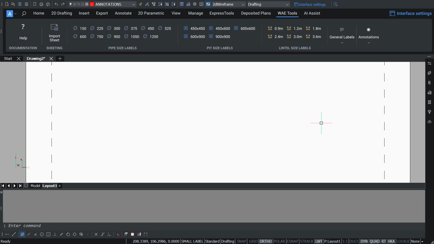

Add Comment
Places the standard surveyor certification note on the front sheet.

Using it
Run ADDCOMMENT, then:
Select Surveyor [Ben/Angela/Peter]:— expands to the surveyor's full registered name.Select Surface type [First/Second/fInal]:— the AC layer the road centrelines were taken on.Specify point to place text:.
What you get
The full certification paragraph as a fixed-width text block, covering the work-as-executed statement, interallotment drainage, the road centreline layer, the height datum and pit and pipe sizes — followed by a signature rule and a line for the date and any additional comments.